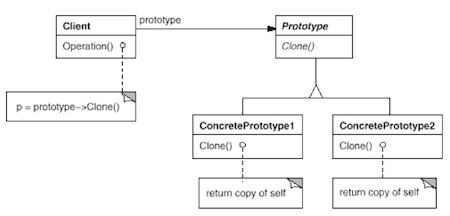

Prototype Pattern
원형이 되는 객체를 복사하여(클로닝) 객체를 생성한다. 보통 Prototype은 외부 엔터티 혹은 Factory가 제공하며 Prototype의 실제 타입(인터페이스를 구현하고 있는 객체의 타입)은 알 지 못한다.
구성
- Prototype
- 자신을 복제하는 기능 인터페이스를 정의한다.
- Concrete Prototype
- 자신을 복제하는 기능을 구현한다.
- Client
- prototype에 클로닝을 요청하여 새 객체를 생성한다.
구조

장단점
- 런타임에 Factory에 새로운 Concrete Product를 추가하기 쉽다. Factory에 Prototype을 넘기기만하면 되기 때문이다. 삭제 역시 쉽다.
- Prototype은 객체 생서 시간을 줄일 수 있다.
- Abstract Factory는 구현 상속을 통해 약간씩 다른 행위를 가진 클래스를 정의하도록 한다. Prototype패턴은 상태를 이용하여 Abstract Factory의 상속 문제를 해결한다. 객체의 행위가 상태에 따라 급격히 변화한다면 객체를 동적으로 설정 가능한 클래스라 생각하고 Prototype을 이요해 객체 생성 메커니즘을 구현할 수 있다.
- 명시적으로 clone()메소드를 구현해야 하는데, 이 작업이 매우 어려울 수도 있다. 또한 깊은 복사와 얕은 복사 문제를 고려하게 된다. clone메소드가 생성자 처럼 필드를 초기화 하는 기능을 할 수도 있다.
예제
예제 코드 보기